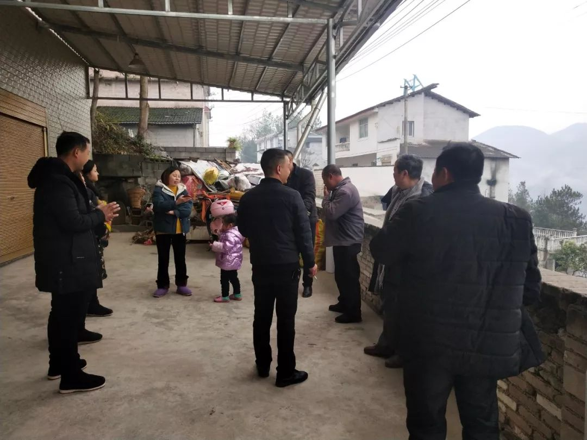
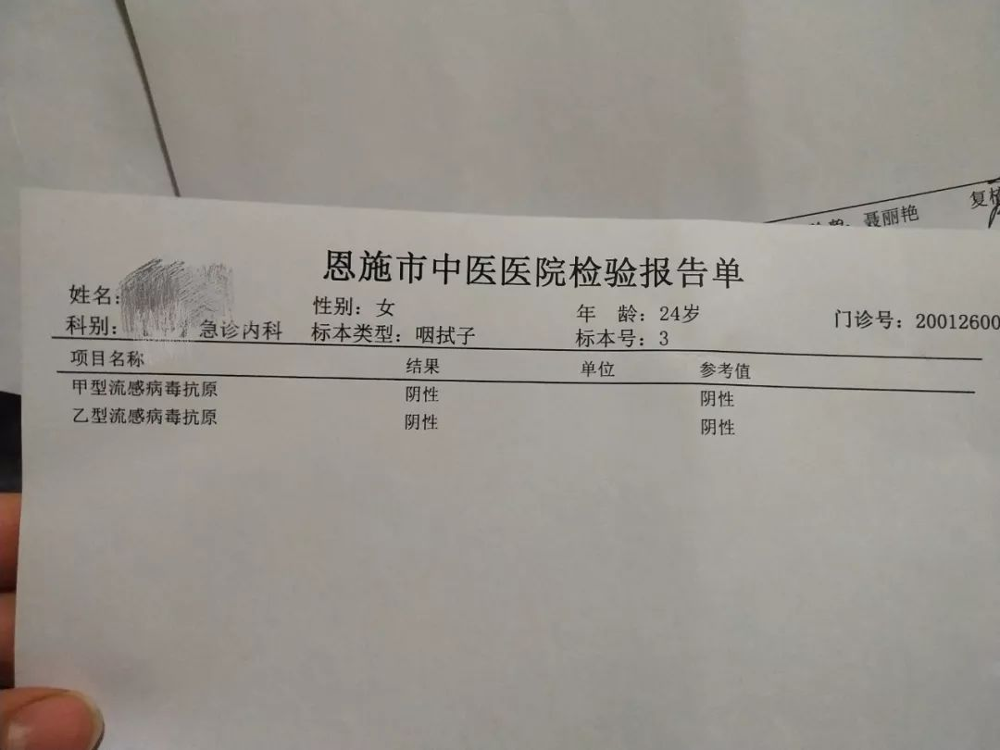

最后一道防线
原文链接 备份链接 2月3日，武汉市洪山区驿海柏曼酒店，医生袁红在查看一名疑似患者的肺部CT，并告知病患“您目前的感染情况不严重，不要害怕”。该酒店的医生会根据疑似病患此前在医院得到的诊断，对其作大致的病情判断，并提供抗病毒、退烧的口服 …

摘要：这是24岁的曾真记忆中最冷清的一个新年，也是家族微信群最活跃的一个除夕夜。老老少少在群里发红包、抢红包，仿佛云社交真的可以打破这个春节的寂寥。然而抢完红包，群回归死寂，偶尔有消息弹出，一定是关于新型冠状病毒肺炎。
过年回家在武汉转车，赶上了疫情扩大。回到家乡湖北恩施的小山村，她开始身体不适，和长辈争辩，然后被“禁足”。一个混乱而脆弱的春节，在不知如何自处的困惑中悄然度过。以下是她的回村经历。
文丨曾真
编辑 丨陶若谷
我似乎成了村里隐形的传染源
家族对我的戒备始于武汉“封城”那天。
我自认为是很受长辈喜爱的姑娘，以往的寒假，烤火桌旁每天都坐着邻居和亲戚。但今年春节，从前爱来聊天的幺爸似乎绕道而走，一墙之隔的大伯家也没再踏过我家门槛。虽然谁都没说什么，但能想象对我的恐惧，因为武汉“封城”两天前，我刚从那里转车回来。
除夕那晚，不想新的一年始于这样的惨淡，我发微信叫堂弟来打牌。以往假期，只要一个消息，十分钟内，他和姐姐就会出现，但今年他没来。我们只能一家三口守着春晚。

马路上少有的村民。
爸妈没有专心看，我爸拿着手机看短视频很大声，我妈在和别人聊天，没人关心我。我精神紧绷，觉得身体在发热，立马量体温，37.2度，虚惊一场。我妈终于发现我过度焦虑，提出三个人斗地主，虽然没啥好玩的，但这样一个除夕夜，还能干点什么呢？
24点整，农历新年如期到来，沉寂的夜晚被山村里的鞭炮声打破。记不清几年前，我们村全面禁止放炮，今年这事儿似乎被人忘了。恩施山多，以前大年三十上坟放烟花爆竹，后来不让放了，容易引发山火。一到过年宣传车就开进村里，宣传禁鞭。今年宣传车照旧来了，只是喇叭里喊的是“疫情呈蔓延趋势，为了你我健康，现倡议如下……”
我们村在恩施近郊，相比那些深山里的村子，信息还灵通一些。但我1月21日刚回家时，周围的人对疫情还没有什么认识，直到武汉“封城”。
1月23日晚，在村医院工作的婶子连参加了三个会，州级到市级再到镇级，从晚上八点开到凌晨一点多。第二天一早，她又接着去开村里的会，说州领导下了命令：这次工作做不好的干部，直接写辞职报告；导致重大失误的，直接送到司法机关。虽然婶子是医生，但在这几次会议之前，她也没想到这么严重。
也正是婶子这几个会，才让家里长辈开始重视防护。真的像网友调侃一样，劝长辈戴口罩的难度好比他们让我们穿秋裤的难度，但那天之后，就连不怎么出门的大伯母在家里都戴上了口罩。
以往过年，马路上的车一辆接一辆，每家都在打麻将、打牌、嗑瓜子……今年不要说车，连人都很少，偶尔看见几个同村的，都整整齐齐戴着口罩。腊月底，大人都忙着备年货，零食、水果、干果，还做了大罐的炸鱼、牛肉干、泡椒鸡爪……现在各家都开始愁吃不完。门庭冷清，没客人来，也不往别处去。
我也收到村委会的信息，调查近期是否在武汉待过或者中转，只要有以上经历，14天内都要被密切跟踪。我不能随意走动，最大的活动范围就是我们村儿。实在坐不住就到门口的马路上逛逛，走到几个叔叔家门口也不敢进。
27号一大早，婶子又给我打电话，据说村里已经出现疑似病例，有一家的亲戚从武汉回来，出现发烧、咳嗽症状，医院查出新型冠状病毒肺炎呈阳性，但由于缺少试剂盒，还在确诊当中。目前村里正在查这家人接触了谁。
即使这样一个与武汉远隔数百里的小村庄，也没有一个人就一定是安全的。
晚上，村主任给我打了两个电话，手机在充电没接到，他估计是怕我流窜，又微信通知我，要待在家中，不要串亲戚。我在想，难道连戴着口罩逛马路都不行吗？我似乎成了村里隐形的传染源，名副其实的“瘟神”。

村里封路，想出去的人在搬村口堵路的石头。
不团年，好像亲情就变淡了
去年12月8号，武汉华南海鲜城发现了第一例新型冠状病毒肺炎患者时，我正盘算着小外甥什么时候出生，要给他买些什么小玩意。
我姐嫁到武汉，一个人在那边没什么亲戚。农历腊月十七，小外甥出生，我们大家族盘算着正月初七开车到武汉，摆满月酒给她长脸，让姐夫家知道我们人丁兴旺，不好欺负。但我赶不上了，要回北京实习，就想着年前去探望一下。
春运的票很难买，抢了好久才买到从北京到武汉的票。当时官方通报武汉的患者有60多例，我想着这么大的城市，60多例应该问题不大，而且之前也发布了“可防可控”的声明。从火车站下车到光谷广场的地铁上，我还特地观察了，没什么人戴口罩。
冬天的武汉阴雨连绵，不像北京总是晴天。武汉像是我的第二故乡，承载了太多青春记忆，味蕾也极度思念外乡没有的味道。行李一安顿好我就和朋友去了中南财经政法大学附近的那家贵州酸汤。大学生返乡后，拥挤的美食街丧失了往日生机，只有三三两两的行人。店里两三桌食客，结账时老板说：你们两个也太能吃了。
至此，我还沉浸在喜悦中。
1月20号早上，我开始意识到事情没那么简单。打开微博发现新型冠状病毒肺炎的病例由60多例增加到190多例，惊呆了，谁知道第二天又会增加多少？我赶紧和姐姐商量，年后再去看小外甥，改签第二天回恩施的票。事后证明如果不改签，现在很可能还在武汉。
回家的D5867次列车上，我一直在看手机，每条关于疫情的新闻都在刷新我的认知。路上少有人交谈，都在看手机。回想起来，如果一开始不说“可防可控”、“尚未发现人传人”，我一定不会在那个时候去武汉，尤其我这么怕死。
一回家我就洗头、洗澡、用消毒液洗衣服，然后跟我妈说，让我姐取消满月宴。但她不这样认为，她说生死有命，病毒不会降临在我们头上，她信命，但病毒可不会信。跟她说不通又去劝我姐，没想到她才30岁也如此古板，说办酒席的东西都买了，取消不合适。
转折出现在1月22号。我们家有“团年”的惯例，一大家子三四十人，从腊月二十四就开始在各家聚餐，今天在叔叔家，明天在姑姑家，每天都要一起吃。那几天新闻播得多了，长辈们也开始慌，饭桌上一直在议论，大伯母建议我姐取消“满月宴”，我妈也很紧张，再加上整天被我灌输，吃完饭就回家就跟我姐打电话，她终于决定取消。
虽然不去武汉了，但春节期间村里走亲戚频繁，吃饭免不了推杯换盏。谁都不能确定14天内接触的人当中，有没有新型冠状病毒携带者。
武汉“封城”那天在幺爸家团年，在武汉工作的堂哥回来了，饭桌上已经有人不像一天前那样自然，叫堂哥不要串亲戚。堂哥的妈妈明显不高兴了，吃过饭就悻悻离开。大过年的，她自然希望儿子到亲戚家走动走动。
但我觉得这个势头很好，开始劝我妈取消今年的“团年”。她说不行，前面很多家已经聚过了，不能到我们家就取消。她怕落人口舌，白吃了前面那么多家的团年饭。团年，大人觉得就是一大家子难得能团圆，也是辛苦了一年好不容易放松的时侯，每家都希望在他们家“团年”那天，大家玩得尽兴，吃得尽兴。如果不聚上这么一天，好像亲情就变淡了。
好在这时有另一个堂嫂助攻，她在酒店上班，感冒了一直咳嗽，也想取消。腊月二十九晚上，我们俩就在家族群里一唱一和，她说疫情有多严重，我发其他地方禁止聚会的文件，总之是对长辈动之以情晓之以理：一年不聚还有很多年，不要掉以轻心，不要有侥幸心理……
除夕一早，原定初一在他家“团年”的四叔发来消息：取消团年饭。当时国内已经确诊830例，死亡25例。四叔在家族微信群说：这是对家庭负责，对社会负责。随后，原定于初二和初三聚餐的姑姑家和我家都决定取消团年饭。
在武汉工作的堂哥年三十给他过世的父亲上坟，他戴着口罩，走到我们家门口，远远地叫了我爸妈。请他进门喝茶，他说：“特殊时期，还是注意点好！” 我姐家计划也全乱了，别说办席，姐夫快成了“过街老鼠”，他工作群里甚至有人要求武汉人退群，病毒似乎可以通过网络传染。

一大家子在叔叔家讨论疫情。
难熬的潜伏期14天
初一一大早，我就被卧室外面的声音吵醒。我妈嫌我爸声音大吵到我，“她本来就紧张，让她好好休息一下，你看手机的声音，隔几间房都能听到。” 事实上，她说话的声音远超我爸看手机。
我妈年前因肺部感染住过院，落下了咳嗽的毛病。我爸早些年抽烟，时不时也咳两声。在被窝里听见他们咳，我又吓一跳，开始担心，病毒在潜伏期也有传染性，就算我没感染，会不会自身携带的病毒传染了他们？
我身体素质不是很好，之前没放假的时候就有些感冒，从武汉回来一直头晕，没法不怀疑。捱到初一晚上，我爸又突然咳嗽，我一激灵，赶紧摸了摸他的手，还好不烧。第二天早上我还是头晕，觉得不能再拖了，必须去医院检查。我妈本来不答应，但耐不住我强烈要求。
我戴了两层口罩，去了最近的医院，进门一个护士叫我量体温，36.7度。这个医院不在市中心，人相对比较少，几个来看病的都是来查有没有感染新型冠状病毒肺炎。护士说，确诊病例大部分在其他医院隔离，这里只有疑似病例，也很少。

医院化验单。
我查了血，拍了肺部CT，都显示没感染，终于松了口气，但马上又开始不放心，让医生开缓解头痛的药，他说不用。回去之后虽然不咳嗽，不发热，但依然头昏脑胀，吃了两颗我妈常年吃的头痛药，希望能不晕了。
这几天过得好慢，醒来一问我妈，才正月初三，我感觉都应该到正月十五了。距离14天潜伏期还有很久，太难熬了。
就在大年三十，我们恩施州下了“封城”令，关闭全部娱乐场所，连大妈跳广场舞都不再被允许。不到三天，一些邻居就坐不住了，站在马路上，远远隔着一段距离，聊了会儿天。
住在马路对面的谢家婶子原本准备初三、初四去挖鱼腥草，以往的年份，初五、初六就可以卖个好价钱，而今年，菜市场空无一人。爱打牌的叔叔凑不齐牌桌，初二就开始在田里洒除草剂。住在河边上的彭家，不知道在哪儿挖了几棵树，祖孙三代开始在田间动土……
还有一家去了福建过年，他们发朋友圈：福建天气这么好，我们却连门都不能出……在外面哪儿不能去，回也回不来。
为了避免人口流动，我们村委会也发了封路通知。与网上传的“硬核封路”不一样，我们村干道上，只是堆了些石头，有人想走这条路进恩施市，徒手搬开石头，依旧若无其事地把车开进城去。
此时此刻，没有太多关于家国命运的感想，实在头晕。网上信息太多，但事实和谣言真假难辨。我有意识地屏蔽它们，不让虚假信息放大自己的焦虑。如果说有什么感触，那就是希望以后能做到信息透明。更希望14天赶快过去，更多人平安度过开局不太好的2020。
后台回复”读者群”, 加入更多讨论

小昼
微信扫一扫赞赏作者 赞赏
长按二维码向我转账
受苹果公司新规定影响，微信 iOS 版的赞赏功能被关闭，可通过二维码转账支持公众号。
原文链接 备份链接 2月3日，武汉市洪山区驿海柏曼酒店，医生袁红在查看一名疑似患者的肺部CT，并告知病患“您目前的感染情况不严重，不要害怕”。该酒店的医生会根据疑似病患此前在医院得到的诊断，对其作大致的病情判断，并提供抗病毒、退烧的口服 …
原文链接 备份链接 文 | 三明治016 车子缓缓驶近村口。 一根彩带揉搓成的细长绳子，挂在门口两个石狮子上，挡住了进村的路。 因为新型冠状病毒影响，正月初七这天，往年返京最高峰的日子，北京多个村庄、多个社区却相继曝出拒绝租客进门的规 …
原文链接 备份链接 非常时期，武汉成了全国人民挂念、祈福的城市。封城后，武汉人民的真实生活是什么样？ 正和岛自1月26日起特别推出《叶青：我在武汉疫区的第N天》专栏。叶青是一位定居武汉40年的市民，也是一名学者和官员。接下来的一段时间，他 …
原文链接 备份链接 从今天起，我们将围绕全国疫情进行为期两周的报道。 自 1 月 20 日新冠肺炎全面进入公共视野以来，编辑部除了密切留意疫情和它带来的人间悲喜剧外，也试图以我们擅长的角度，小切口地观察这场几乎洗刷了 2019 年国家基调 …
原文链接 备份链接 驰援武汉 | 600多公里、12小时、横穿三省、 一位货车司机的“逆行者”之旅 2020-02-02 12:07 作者：陈茂利 来源：中国经营网 本报记者 陈茂利 北京报道 公路电影《摩托日记》中有句广为人知的台词：“ …